In High School and College, I made films with my friends. Often better than the actual films were the props and equipment we made for them.
-
Film Props & Equipment
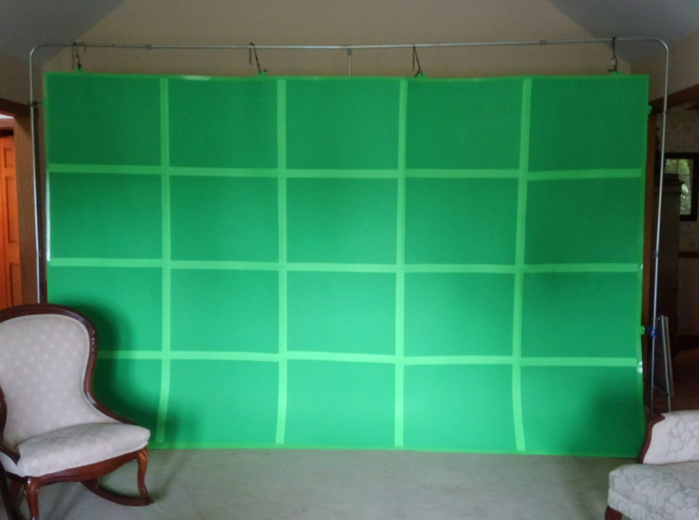Green screen suspended from a standing frame
-
The Stargate
(Spring 2016)In High School, my friends and I shot a Stargate fan film. For it, I constructed a 6 foot diameter portal prop.
I built the underlying structure from ½” EMT, which I bent into an octagon. I adhered this frame to a foamboard backing around which I constructed the cardboard and foamboard shape.
To strengthen the prop, fill in gaps, and make it water resistant for outdoor scenes, I laid a urethane-paper machée overtop. This process is effectively the same as regular paper machée, but uses polyurethane in place of pva glue.
Finally, I finished it with a rock-texture spray paint and wrapped copper-color painted string around 5 points of the prop for the banding.
- 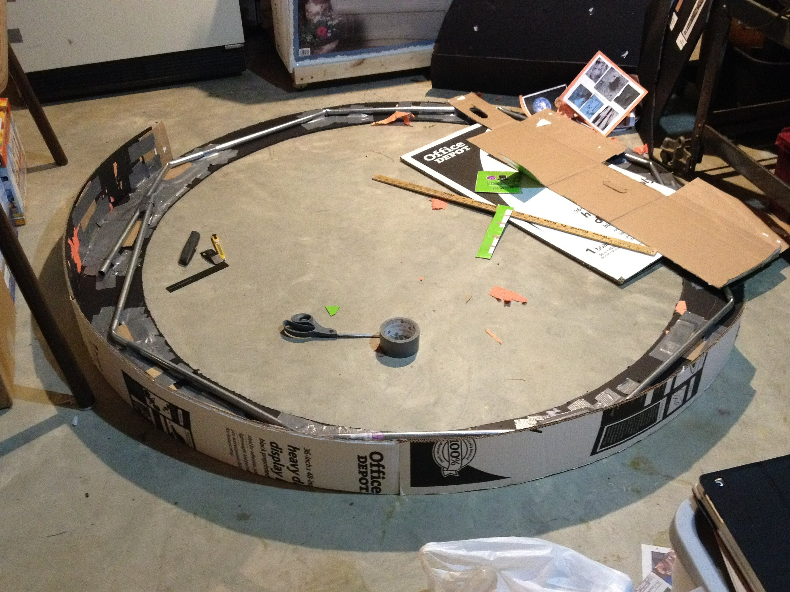
- 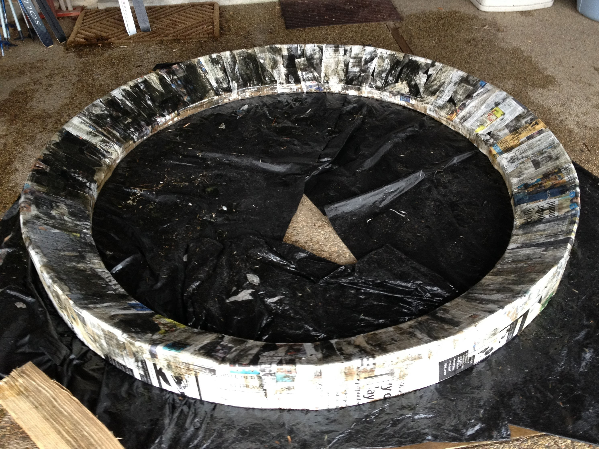
- 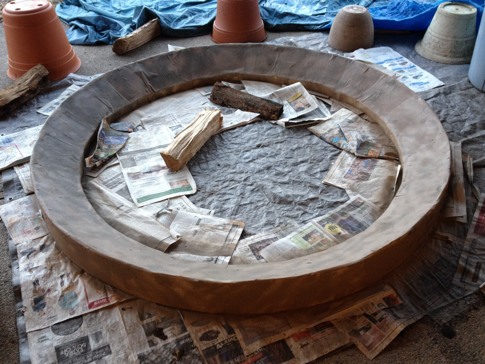
- 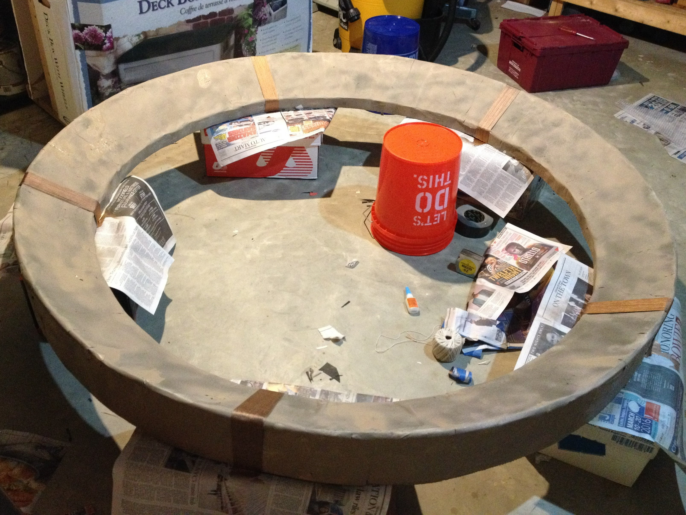
- 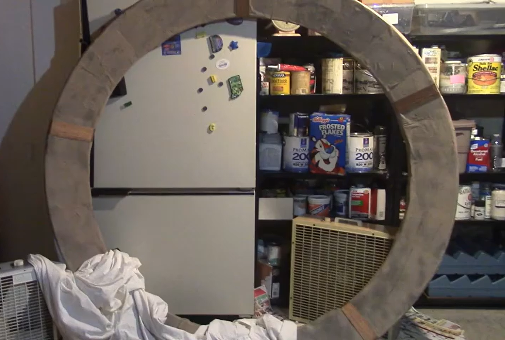
Building the stargate
-
Green Screen Frame
My friend and I made a green screen from construction paper and gaff tape, but we were always having issues finding things to hang it from.
I built this frame from ½” EMT and scrap plywood. It comes apart in several places with thumb screws, allowing the frame to be more easily stored or even transported in the back seat of my car.
- 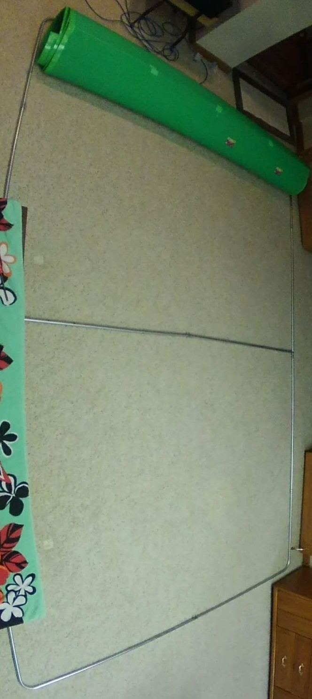
- 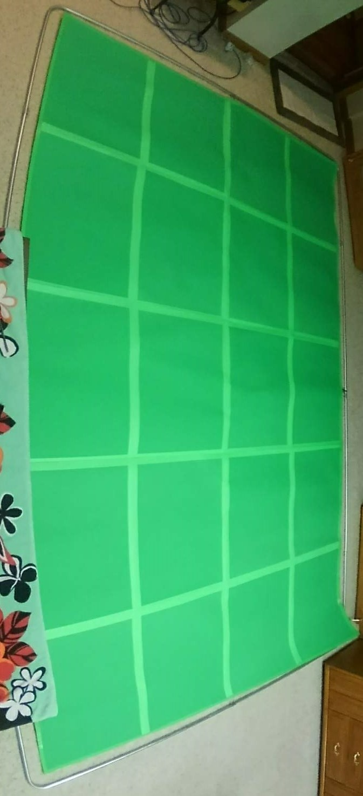
Top to Bottom: the frame, the greenscreen laid over the frame, and the greenscreen suspended from the standing frame
-
Fred
Fred began life as a leg model for my first freshman design project. After our final presentation, I continued building more of him, using my own body for reference. Piece by piece, he took form as a whole man.
- 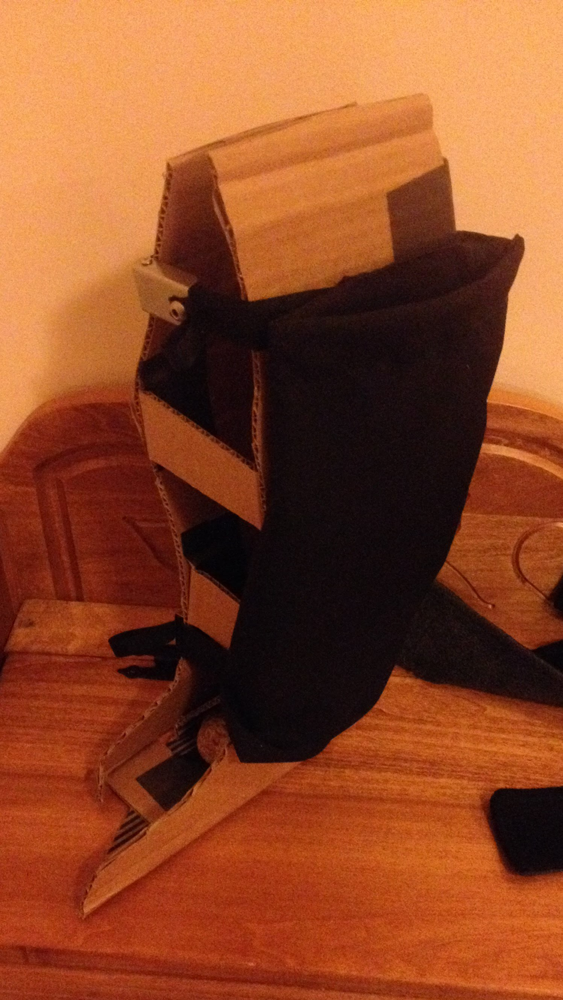
- 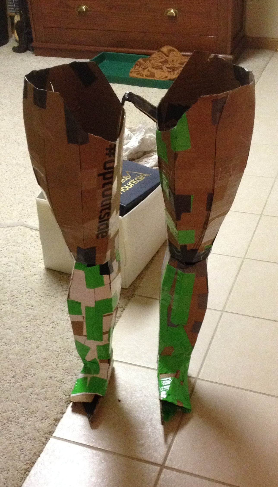
Fred's humble beginnings (Left) and Fred finally standing on his own two feet (Right)
Fred was useful to have around when we needed to film something a normal human could not, like falling from a great height, or even when we just needed another body on set.
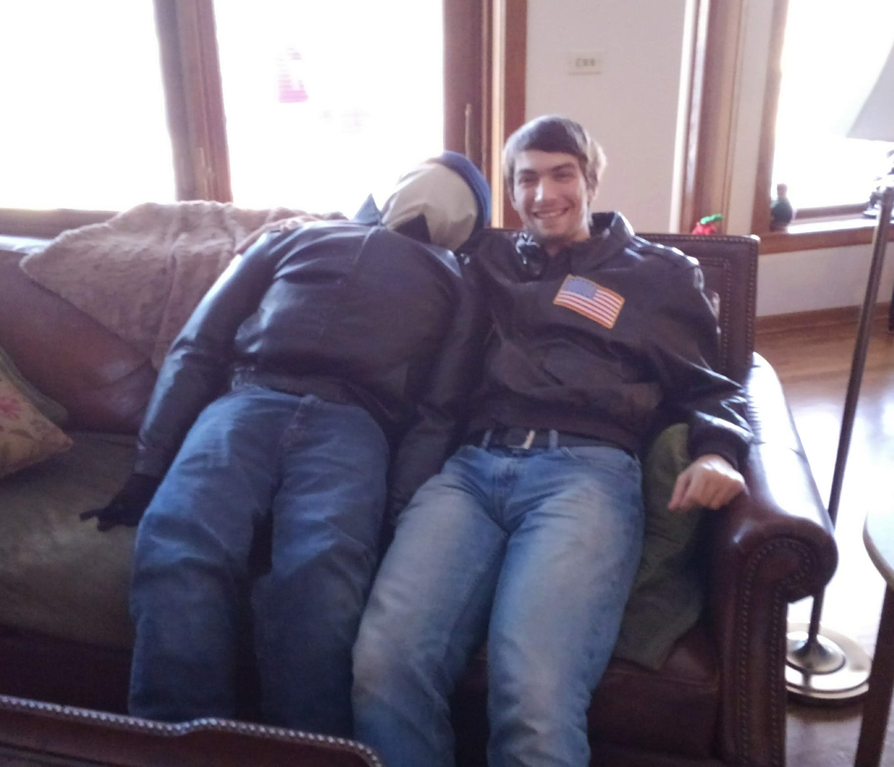Fred sitting next to an actor he will double for
-
Tunnel in the Wall
(Summer 2019)In one film, a character finds a mysterious door behind his couch that leads to a tunnel. To avoid the highly impractical and costly process of digging an actual tunnel, I used a separate tunnel set and editing to craft the effect.
- 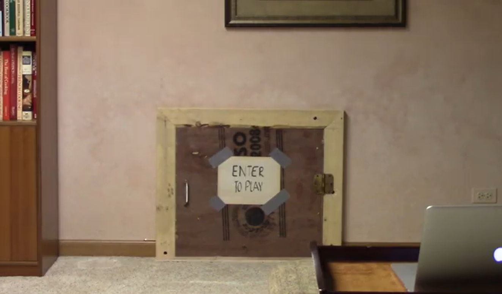
- 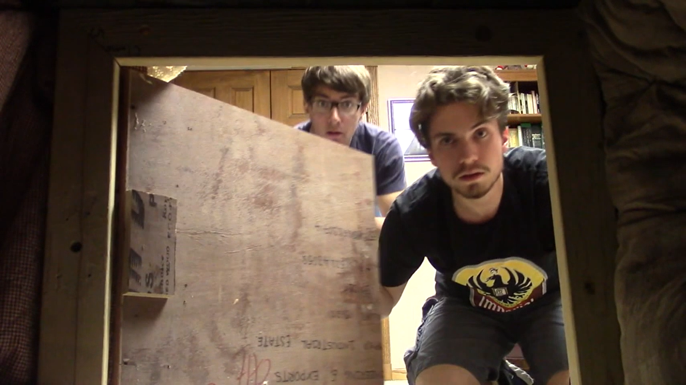
The door (Top), and what appears to be a shot from inside the tunnel (Bottom).
I built the tunnel structure out of scrap wood and foamboard. I then lined it with garbage bags to give it a dark, mysterious look.
I built a second shorter tunnel in the same room as the other door scenes. When the shot is reversed it appears as if we are looking into the room from a tunnel bored in the wall, though in fact the tunnel and camera are both in front of the wall.
- 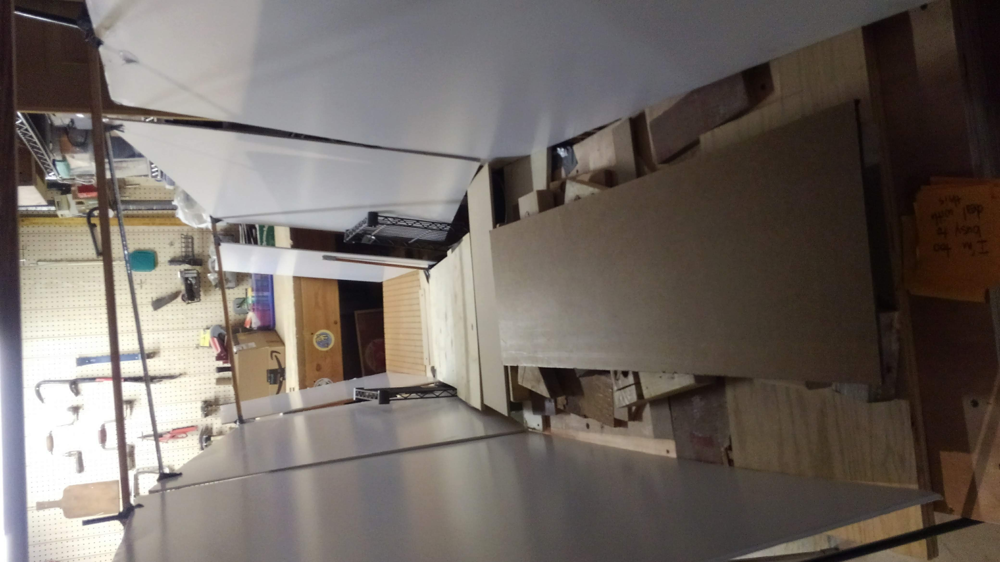
- 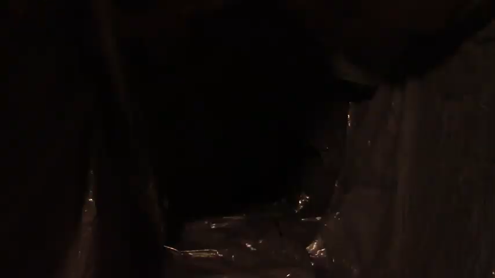
- 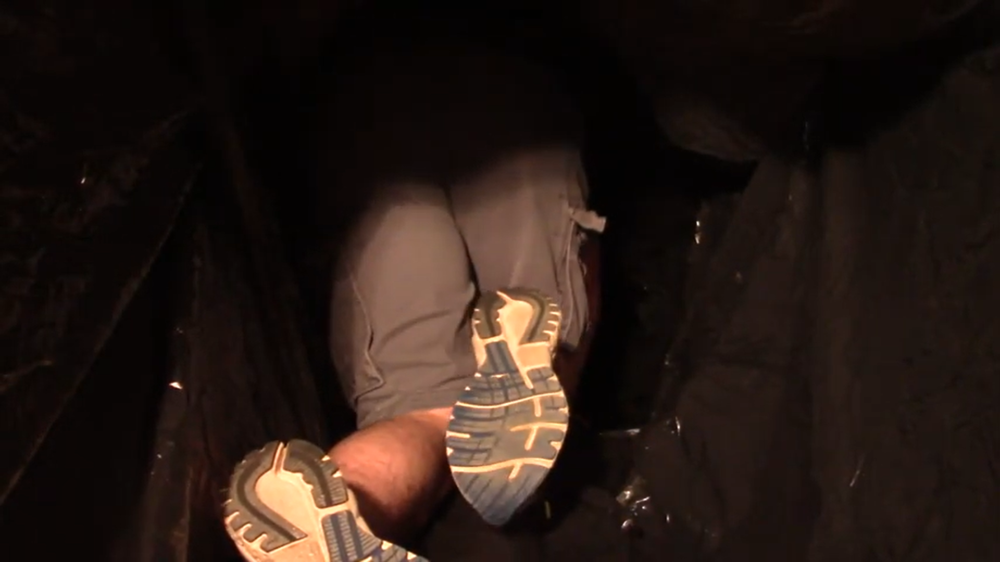
The structure of the tunnel (Left), and the tunnel, which might as well be pitch black (Right)